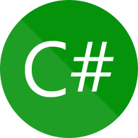

Lenguaje C#.
Descripción.
C#
, también conocido como "C sharp", es un lenguaje de programación desarrollado por Microsoft. Introducido en 2000 como parte del framework .NET,
C#
combina la eficiencia de
C++
con la facilidad de uso de Visual Basic. Su sintaxis elegante y legible simplifica la creación de aplicaciones, mientras que sus características de programación orientada a objetos permiten la construcción de código modular y reutilizable.
A lo largo de los años,
C#
ha evolucionado con nuevas versiones que han añadido características modernas y eficientes, manteniéndolo al día con las tendencias de desarrollo actuales. Ya sea en el desarrollo de aplicaciones de escritorio, web o incluso en la creación de videojuegos a través de motores como Unity,
C#
sigue siendo una herramienta versátil y poderosa para los programadores en todo el mundo. Su integración con .NET proporciona un ecosistema sólido y coherente que facilita el proceso de desarrollo y la creación de aplicaciones de alta calidad.
Características.
Programación orientada a objetos (POO):
C#
se basa en conceptos de POO como clases, objetos, herencia y encapsulación, facilitando la creación de código modular y reutilizable.
Sintaxis elegante: La sintaxis de
C#
es legible y expresiva, lo que simplifica la escritura y lectura del código.
Integración con .NET:
C#
es parte integral del entorno.NET, aprovechando las bibliotecas y herramientas disponibles en esta plataforma.
Tipo seguro:
C#
es un lenguaje fuertemente tipado, lo que ayuda a prevenir errores y a mejorar la seguridad del programa.
Evolución constante: Con cada nueva versión,
C#
introduce características modernas como patrones de coincidencia, expresiones lambda y tipos anónimos.
Compatibilidad multiplataforma: A través de iniciativas como .NET Core y .NET 5,
C#
es utilizado en diversas plataformas, incluyendo Windows, macOS y Linux.
Manejo de excepciones:
C#
ofrece un sólido sistema de manejo de excepciones para gestionar errores y excepciones en tiempo de ejecución.
Asincronía:
C#
proporciona características para escribir código asincrónico y gestionar tareas concurrentes de manera eficiente.
LINQ: Language Integrated Query (LINQ) permite realizar consultas sobre datos en forma intuitiva y consistente.
Facilidad de depuración: Las herramientas de desarrollo de
C#
facilitan la depuración y el diagnóstico de problemas en el código.
Usos.
Desarrollo de aplicaciones de escritorio:
C#
se utiliza para crear aplicaciones de Windows con interfaces gráficas de usuario ricas y funcionales.
Desarrollo de aplicaciones web: A través de la plataforma ASP.NET
C#
permite la creación de sitios web dinámicos y escalables.
Desarrollo de videojuegos:
C#
es un lenguaje de scripting común en el motor de juegos Unity, facilitando la programación de lógica de juego y comportamientos.
Aplicaciones móviles:
C#
se utiliza para desarrollar aplicaciones en el sistema operativo Windows Phone, así como en otras plataformas móviles a través de herramientas como Xamarin.
Aplicaciones de servicios en la nube: Con la plataforma Azure,
C#
es empleado para desarrollar servicios en la nube y soluciones escalables.
